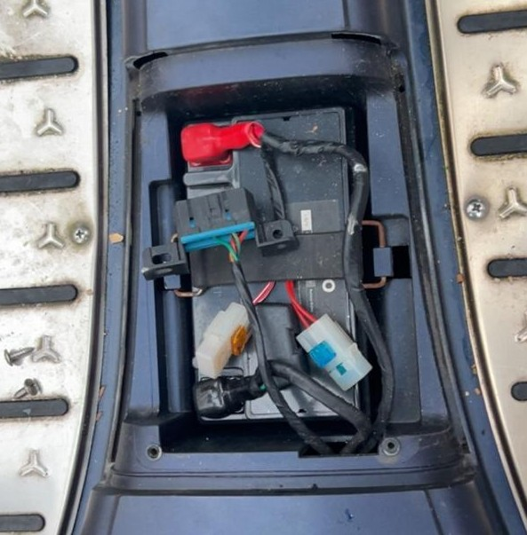

Accu vervangen
De accu levert elektrische energie aan verschillende onderdelen van de scooter. Bij de AGM bevindt de accu zich onder het zadel, achter de daarvoor bestemde afdekking. Verwijder de afdekking en maak eerst de minpool en daarna de pluspool los. Haal de oude accu eruit en plaats een nieuwe accu met de juiste specificaties. Sluit eerst de pluspool en daarna de minpool aan.
De accu levert stroom aan de elektrische onderdelen. Maak eerst de minpool en daarna de pluspool los. Vervang de accu door een exemplaar met de juiste specificaties. Sluit eerst de pluspool en daarna de minpool aan.
